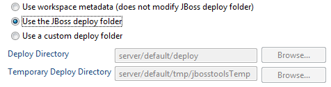
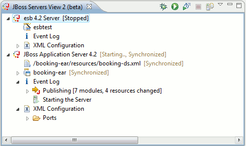
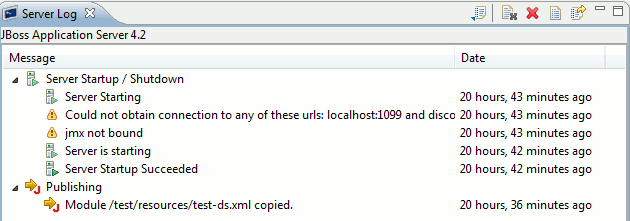
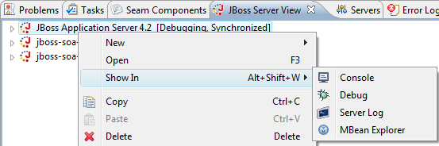
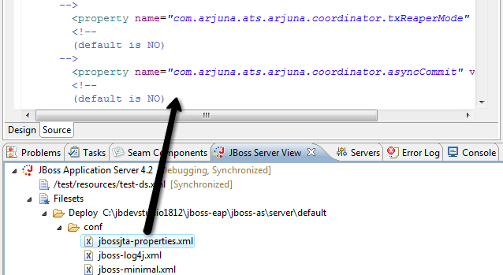

General
JBoss 5
JBoss 5 GA is now supported. Previous versions did not take into account the new common/lib in AS 5 which made some operations fail.
Seperation of JBoss Community and JBoss product based servers
There is now a specific server adapter for the productized and supported version of JBoss AS, also called JBoss Enterprise Application Platform(EAP). Making it possible for us to specialize and validate the adapters according to their feature set but also to make it clear which servers are community supported and which are commercially supported by JBoss Enterprise Middleware.

XML Catalog
We added in a range of JBoss related DTD's and Schema's into Eclipse's XML Catalog.
For example: JBoss JCA Config, MBean service, JBoss Web Service reference and jaxws-config.
This makes the xml validation and code completion available without extra setup or need for being online.
Setup/Configuration
Deploy in Workspace
All JBoss 4.x servers now default to deploying into Eclipse workspace preventing pollution off the default server deploy directory.
Existing servers will still deploy where they were configured to, but you can double click a server and adjust which mode of deployment you want: In Workspace, Default Server deploy or any custom directory you would wish.
The locations are added to the server via JMX thus it requires JMX to be enabled and if secured that you have specified username/password.

More control over server launch
Various improvements have been made to ensure server launches will be started with the proper parameters, classpaths, etc. This have made the launch setup more strict, but there is still a lot of freedom to adjust the server launch as wanted.
The servers classpath was in previous releases readonly, but that causes problems for users wanting to add their own jars in the startup classpath. That is relevant in cases where you want to patch the server, add a custom charset or other tweaks that requires early access to the classpath. This is now done by all servers to have a custom 'server runtime classpath container', this container will be there by default and point to the default jars in JBoss. You can now adjust the classpath and just make sure this container is there (if it is not there press 'Restore defaults') if you want us to pick up the classpath.
More strict server launches
To avoid inconsistencies between server's and their configured runtime the Launch Configurations for JBoss Servers are now more strict in enforcing the configured values in the server.
For example if you change the launch configuration program arguments to "-c myConfig" but do not change the targeted runtime configuration then your program arguments will be ignored. The server runtime "wins" so to speak. This ensures consistency and if you i.e. change the location of the runtime your launch configurations will automatically pick that up.
Values not controlled by the server and its runtime setup will be passed on unaltered.

Port preferences
Our server adapter by default tries to automatically detect the ports it needs for integrating with a JBoss server.
Sometimes it can though be relevant to override this automatic detection if a user is using some custom configuration. These port settings are now configurable on the Server in the Server Editor.

Other server settings like Timeouts and Server polling have also been moved to the server editor from the seperate preference page in Eclipse preferences.
Server view
Improved Servers View
We have always had an extra servers view since Eclipse WTP's server view does not provide any form of extension points to add server specific info.
In this release we have added a beta/preview of a Servers view that is built on Common Navigator Framework allowing extensions and is using label decorators instead of extra columns to make the UI more compact without loosing the vital information.
We have suggested to WTP that they incorporate a view based on this. You can provide feedback on this at bugs.eclipse.org and the related bugs.

Server Log View
The Event Log was formerly embedded inside the Servers view; now it has its own view providing easier access and sorting.

Show In Additons
The Show In menu on AS servers now also include easy access to Server Log and MBean Explorer

Direct edit from Fileset's
Double clicking on a file from Servers fileset now opens up the editor automatically.

Drag'n'Drop to JBoss Server View
JBoss Server View now supports drag'n'drop of deployable and runnable projects/resources.
This means that if you...
- drag a project to a server it will deploy it to the server and run it by showing the main page in a browser
- dragging a .xhtml file from WebContent will do the same and show the corresponding page in a browser
- dragging a deployable resource (i.e. a datasource (-ds.xml) file that has been made deployable) will simply deploy that resource directly to the server.

'Explore' shortcut in Server view
There is now an "Explore" item in the context menu of JBoss servers and its deployed resources/projects. This action uses the native OS file explorer to browse the deploy destination.

Exports
Export ESB Archive
There is now an Export wizard for ESB Archives allowing you to get a .esb archive for i.e. deploying to an external server.